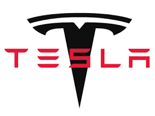
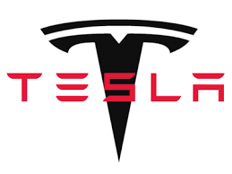

The Information Age
What drives us toward data?
! Let’s talk about the exciting digital age that started in 1960’s.
Chapter 1: Money
1960 - 1990
1960-1980: Individualism and Consumer-ism
Every person was to have several banking accounts.
Every person was to have several credit cards.
Every person was to have several reward cards.
! For the first time, banks had exceeded the data capacity of human-machine systems.
1960-1980: Computer Science to the rescue
The start-up was…

____________________
Innovation #1
1966: IBM IMS (Information Management System)
- !
- Hierarchical database
- Special hardware designed to support IMS: IBM 2740, System/360
- Special operating system designed to support the hardware, z/OS
- IMS is still in production today, with support for Java, JDBC and interfaces to the Web and mobile devices.

______________________
Innovation #2
1970: IBM System/R and SQL
- !
- Algorithms from System/R is still used in the design of Google Big Data.
- One of many descendants of System/R is SQLite, the embedded database in 100 millions mobile devices.
- The special query language SQL was designed in 1974, and it is still being used by Google, Facebook and millions of software developers.

Jim Gray: Relational Database

Don Chamberlin: SQL
_______________________
Innovation #3
1977: Oracle
- !
- The most successful enterprise database product.
Holds ownership of
- Java: the most popular programming language
- MySQL: the most popular database to power Web apps

Founders of Oracle: Larry Ellison, Lawrence Joseph
The Consequence
! These computer scientists were heros that created possibilities never seen before in history.
1990: US Corporations
Star Alliance
- !
- 27 + 40 different airline companies sharing a single pool of customers.
- Established in 1997

_________________________
Walmart
- !
- The first department that recognized the competitive advantage of data.
- Every transaction since 1990 has been permanently archived for analysis.
- Went international in 1990.


_______________________
Air Miles and other reward programs
- !
- Founded in 1992
- Created the first large-scale social networks involving customers and businesses.

The Market
- !
- Outcry trading before 1980s
- Electronic trading terminals starting in 1988


Chapter 2: Power
1990 - 2010
1990 - ? : Power to Technology
- !
The world was so transformed by the ability to archive and process data, virtually all sectors of society became data centric.
Almost all of technology was dedicated to data.
! The world was hold hostage by technology.
_____________________________________
Technology companies became powerful.
1990 - 2000
_____________________________________
Technology for everyone
- Personal computers
- Gaming
Telecommunication
- 1990: 2,400 bits/s
- 1995: 19,200 bits/s
- 2000: 1,000,000 bits/s
- 2010: 5,000,000 bits/s
- 2017: 25,000,000 bits/s (ten thousand times improvement)
____________________________________
A new wave of data explosion
- 1990: Emails (1,000 universities)
- 2000: Web pages
- 2010: Blogs
- 2017: Instagram / Twitter / Youtube / Facebook
Internet-scale = 1 exabyte
- 1 exabyte = $10^{18}$ bytes
- Global data volume reached 800 exabytes in 2009
- Google holds over 10 exabytes of data.
___________________________________
Examples of exabytes
! If we write done every word spoken or written since the beginning of writing (remember the clay tablets?), it is 5 exabytes.
! One exabyte can hold 100,000 $\times$ all printed material in the Library of Congress.
! Cellphones exchange 75 exabytes of data each year.
! One gram of DNA can hold 455 exabytes of information.
Database systems of the new millennium
Exabyte-range databases

! 30 million users generating and consuming data in real-time 24 $\times$ 7.
- Hive (distributed relational data store)
- Cassandra (NoSQL data store)
! Holding over 10 exabytes of data, many copies of the WWW, running on over 900,000 computers.
- Big Table (2004)
- Dremel (2010)
- F1 (2013)
- !
- !
- They are not your 1990 databases anymore.
- They are not for sale.
- Hive / Cassandra are opensource projects.
- Big Table is a paid service.
- Dremel and F1 are secret sauces in Google.
- All hardware environments are kept secret.
________________________________
Billions of databases
Each person has multiple devices.
Each device is running multiple databases (SQLite).
Data is then uploaded to data centers (Millennia databases).


2000 - 2010: The Consequence
Super-rich corporations
According to Forbes, 2014, Apple Computers has twice the cash reserve as the US Federal Reserve in 2014. This gap probably has widened.
Super-rich individuals
 Chad Hurley, Steve Chen,
Jawed Karim founded Youtube in Feb 2005 in their
San Francisco apartment.
Chad Hurley, Steve Chen,
Jawed Karim founded Youtube in Feb 2005 in their
San Francisco apartment.2010 - 2017: The Consequence
A new wave of powerful US corporations
 

2010 - 2017: The Consequence
Privacy Against Surveillance
Edward Snowden, 2013

Freedom to information
Aaron Swartz, Founder of Reddit, 2012

Chapter 3: Improvements to the environment, society and human life
2015 - NOW
The environment
The rise of electric vehicles


Elon Musk
Founder of Paypal
Society
Y-combinator Venture (Nonprofit) Fund
- !
Copia
COPIA easily connects businesses with surplus food to local nonprofits in need
Giveeffect
Fundraising, volunteer, and donor management software for your nonprofit
One Degree
Community resources, just for you. The easiest way to find, manage, and share nonprofit services for you and your family
Watsi
Watsi is an online peer-to-peer crowdfunding platform that allows users to fund life-changing medical treatments for underserved people in developing countries
2015: The Ebola virus outbreak

___________________________________

_________________________________
Warning came from data scientists:
Eurosurveillance, Volume 19, Issue 36, 11 September 2014
Rapid communications
“EARLY TRANSMISSION DYNAMICS OF EBOLA VIRUS DISEASE (EVD), WEST AFRICA, MARCH TO AUGUST 2014”
- H Nishiura, University of Tokyo, Japan
- G Chowell, Arizona State University, USA
__________________________________
The prediction

The data science

__________________________________
The cure
Ebola Vaccine: Team B (23 members over dozens of universities)
Jon Andrus, MD Executive Vice President Sabin Vaccine Institute USA Norman W. Baylor, PhD President and CEO Biologics Consulting Group, Inc. USA Fred Binka, PhD MPH Professor, University of Health and Allied Sciences Ho, Ghana John D. Clemens, MD Executive Director International Centre for Diarrhoeal Disease Research, Bangladesh Dhaka, Bangladesh Tumani Corrah, MD PhD CBE MRG Director Africa Research Excellence Fund, MRC Unit The Gambia R. Gordon Douglas, Jr, MD Professor Emeritus of Medicine Weill Cornell Medical College USA Ogobara K. Doumbo, MD PhD Professor and Chair, Department of Epidemiology of Parasitic Diseases Director, Malaria Research and Training Center Chair of Foundation Mérieux Infectious Diseases Programs Faculty of Medicine, University of Bamako Mali Arthur Y. Elliott, PhD President Biological Consultant USA Patricia Fast, MD PhD Senior Technical Advisor International AIDS Vaccine Initiative USA Thomas R. Fuerst, PhD Professor and Director Institute for Bioscience and Biotechnology Research University of Maryland USA Christian Happi, PhD Professor and Dean, College of Postgraduate Studies Director, World Bank-funded African Center of Excellence for Genomics of Infectious Diseases Redeemer's University Mowe Ugun State, Nigeria Pontiano Kaleebu, MD PhD Director, MRC/UVRI Uganda Research Unit on AIDS Entebbe, Uganda David C. Kaslow, MD Vice President, Product Development PATH USA Marc Lipsitch, DPhil Professor of Epidemiology Director, Center of Communicable Disease Dynamics Harvard T.H. Chan School of Public Health USA Adel A. Mahmoud, MD PhD Professor in Molecular Biology and Public Policy Princeton University USA Walter Orenstein, MD Associate Director, Emory Vaccine Center Emory University USA George Poste, DVM PhD DSc Chief Scientist, Complex Adaptive Systems Initiative Arizona State University USA Julien Potet, MSc Policy Advisor, Neglected Tropical Diseasesand Vaccines Médecins Sans Frontières Access Campaign Regina Rabinovich, MD MPH ExxonMobil Malaria Scholar in Residence Dept. of Immunology and Infectious Diseases Harvard School of Public Health USA Amadou Alpha Sall, PhD Director, WHO Collaborating Centre for Arboviruses and Viral Hemorrhagic Fever Scientific Director, Institut Pasteur de Dakar Senegal Faisal Shuaib, MD DrPH Senior Advisor, Federal Ministry of Health Nigeria Peter G. Smith, CBE BSc DSc Professor, MRC Tropical Epidemiological Group London School of Hygiene & Tropical Medicine UK Ross Upshur, MD MSc Head, Division of Clinical Public Health, Dalla Lana School of Public Health Scientific Director, Bridgepoint Collaboratory for Research and Innovation Canada Research Chair in Primary Care Research Professor, Department of Family and Community Medicine and Dalla Lana School of Public Health, University of Toronto CANADA
_________________________________
Massive data generation
Data exchange
Data processing and analytics
The human life
The old way:

IBM Watson:

2015: IBM is already used by Cedars-Sinai Cancer Institute at Los Angeles
2017: Stanford Artificial Intelligence computer vision system detects ski cancer as well as a professional doctor.
Technology is the key
Data Science
Artificial Intelligence and Deep Learning based Databases
Massively scalable and self-generating data processing algorithms and systems
We are still just starting to tackle these problems:

Chapter 4: The Future
The future
We will continue to expand our appetite for data and the ability to make sense and make use of data.
Computer Science and Data Science are the key to that goal.
Let us not forget…
1928: Kurt Godel’s Incompleteness Theorem
Any sufficiently useful logic must necessarily be incomplete.
___________________________
Needs You!
and you need…
| Programming | Algorithms |
| Mathematics | Software Design |
= Computer Science